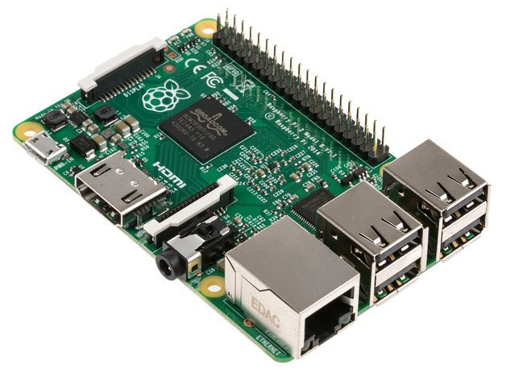
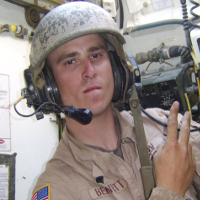

-

Background and Interests
A proud Tucson native, my interests include:
Coding, solar projects, reading, sustainable living, Raspbery Pi, traveling, politics, philanthropy, journalism, cooking, philosophy, Internet of Things, HAM Radio, nature, astronomy, teaching, hiking, history, mathematics, and technology. -

The Army
I joined the army in 2004 becoming a Tank Crewman. I was sent to Basic Training in Ft. Knox, Kentucky and was subsequently stationed in Ft. Hood, Texas. In 2005, I deployed to Iraq. I returned in 2007, and after completing my service I was honorably discharged in 2008. I followed up my active duty service by joining the National Guard from 2008-2010
The Army is where I honed skills such as effective communication, self-discipline, and leadership. -
Eller College of Management at the University of Arizona
After the Army, I matriculated to Arizona's prestigious business school. There I mastered accounting, statistics, business communication, marketing, project management, and strategic planning.
-
Work to Live
While at Eller, some classmates and I decided to apply the knowledge we were gaining from class to life. Thus, WTL was born.
As co-founder and Operations Manager; I co-authored the business plan, oversaw the web development team, created and implemented HR policies and marketing strategies, directed events, and managed inventory. -

Software and Web Development
I've always had an interest with computers and coding. When I was in middle school, my friends and I were fascinated with using Visual Basic to create and play with these AOL mods called, "progs." I also created the website for my little league football team using HTML (back when there wasn't a number associated with it). However, my focus shifted after joining the Army and I had little time to pursue these interests.
With the philosophy to always keep learning, I decided to continue my education in computer science and enrolled in courses through Udemy, Treehouse, Code School, Coursera, and edX. -

Tucson Privacy Services
After reading case after case of personal data being sought after and misused by governments, corporations, and hackers; I decided to research the best practices for keeping my data safe and secure.
I created Tucson Privacy Services protect people's mobile phone, tablet, and/or desktop from these hardships. -
Tucson Code School
In 2016, I founded Tucson Code School to provide free education to kids who are curious about coding. There is an incredible void in public schools for one of the most important skills anyone can have.
Coding will be as essential as reading in the next few decades. I want to teach the importance of coding early so the next generation can take control of their future.